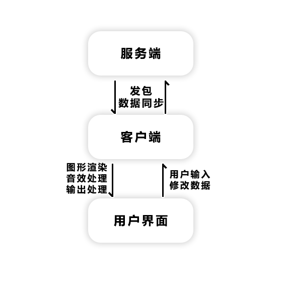

Minecraft运作模型
本小节我们来谈一个至关重要的概念，Minecraft的运作模型。
作为Minecraft的一个“可拆卸零部件”，脚本引擎的代码模型同样极大的受到了原版Minecraft的影响，所以理解Minecraft的运作模型能够让您快速理解脚本引擎的代码架构。
C/S架构
Minecraft的运作模型大体上属于C/S架构（客户端/服务端架构）其中C即【客户端】（Client），S即指【服务端】（Server）。
【客户端】，顾名思义，就是供给玩家使用的一端，它的主要职责有：接收来自服务端的数据并绘制游戏界面，处理玩家的输入输出
【服务端】，我们可以理解为提供服务的一端，它主要承担了处理游戏世界的各种数据及相关游戏逻辑的工作。
下面是C/S架构的运作模式图

如图所示，客户端与服务端通过发包来实现数据同步，同时客户端实现接收用户输入并渲染游戏界面的功能。
端的分布
<<<<<<< HEAD有意思的是，客户端与服务端只是程序在逻辑层面上的概念，且不同游戏情况下，客户端服务端的分布也不同。
对于单人游戏而言，玩家的Minecraft同时存在着客户端与服务端。
对于多人游戏，我们根据情况不同分为局域网联机（包括Xbox联机）与服务器联机。
局域网联机：需其中一名玩家先行创建存档并开放局域网联机，其余玩家才可加入。此时，这名开放世界的玩家的电脑上同时存在着服务端与客户端，所有玩家共用其服务端。其他玩家设备上仅存在客户端。
服务器联机：此时服务器中所有玩家设备上仅存在客户端。服务端位于服务器上。
有意思的是，客户端与服务端只是程序在逻辑层面上的概念。且不同游戏情况下，客户端服务端的分布也不同。下面这张图大致上解释了不同情况下的端是如何分布的。
对于单人游戏而言，玩家的Minecraft同时作为客户端与服务端而存在着
>>>>>>> 0fed1d2eae9df27e7f3f31ca45bd032f8b96309e